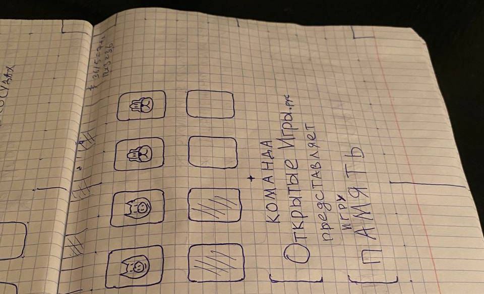

2024-07-04 00:00
В июне реализовал графический интерфейс игры «Память» на Python с помощью Python Arcade.
В ходе поиска наиболее удобного инструмента создания ресурсов (ассетов) остановился на обычной тетрадке в клетку:

Для дополнительной проверки качества архитектуры портируемого кода участвовал в трёхдневном геймджеме от «Начни игру» с игрой «Память», оформленной под требования конкурса.
Выглядит итоговая игра следующим образом (сборка Windows64):
Добавлю в инструмент трансляцию кода из Python в JavaScript.